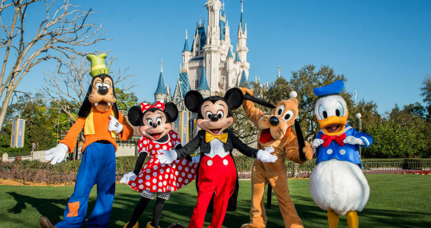

A Walt Disney World localizada em Orlando - Flórida é um lugar encantador. O Compelxo Disney conta com 4 parques temáticos:
Nos parques da Disney podemos encontrar os personagens dos desenhos e filmes. Podemos abraçar, tirar fotos e pedir um autógrafo...
O Magic Kingdom realiza todos os dias, uma queima de fogos de artifício, com duração de 18 minutos e é realizada ao redor do famoso Castelo da Cinderela, o ponto mais famoso do parque.